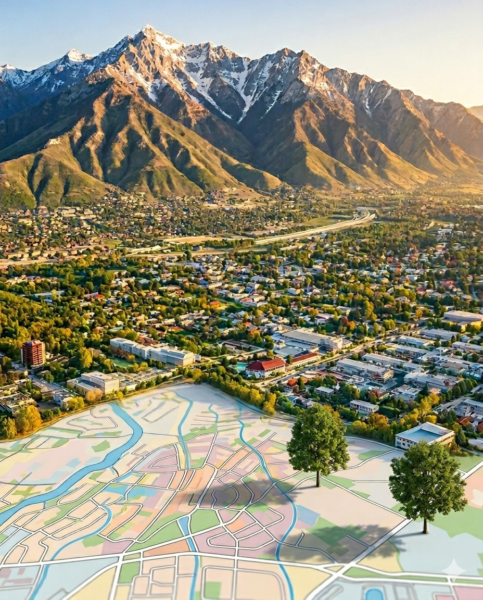
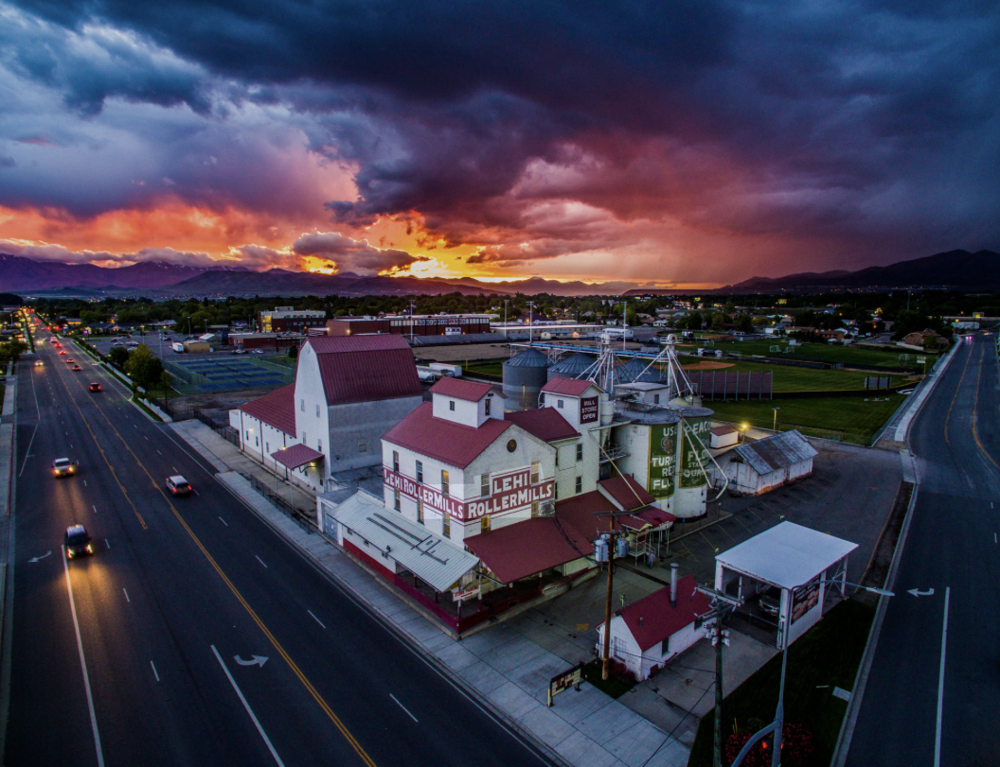
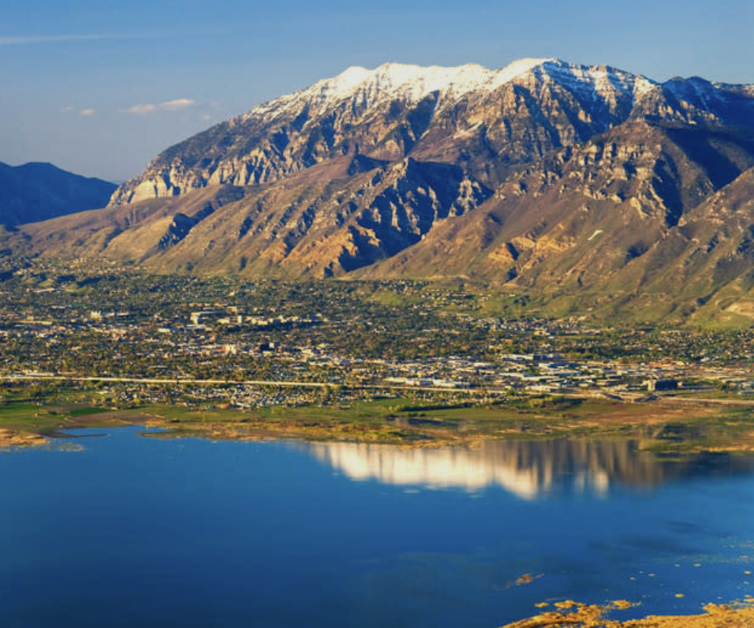
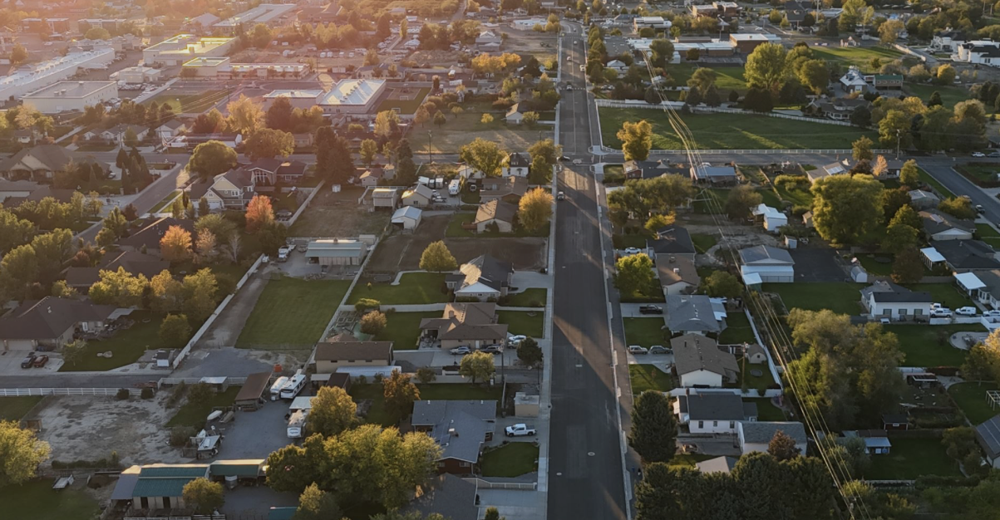
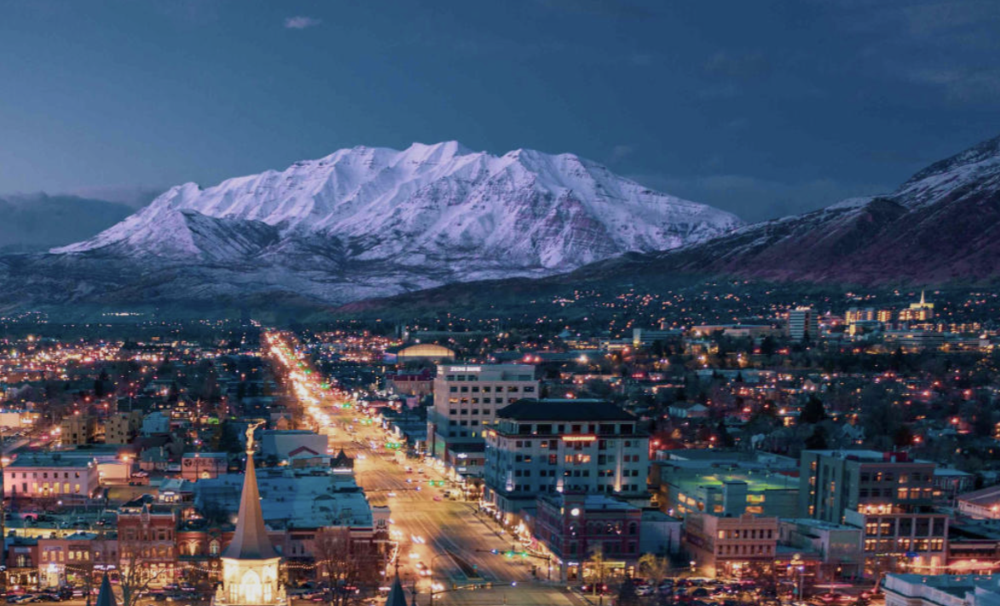
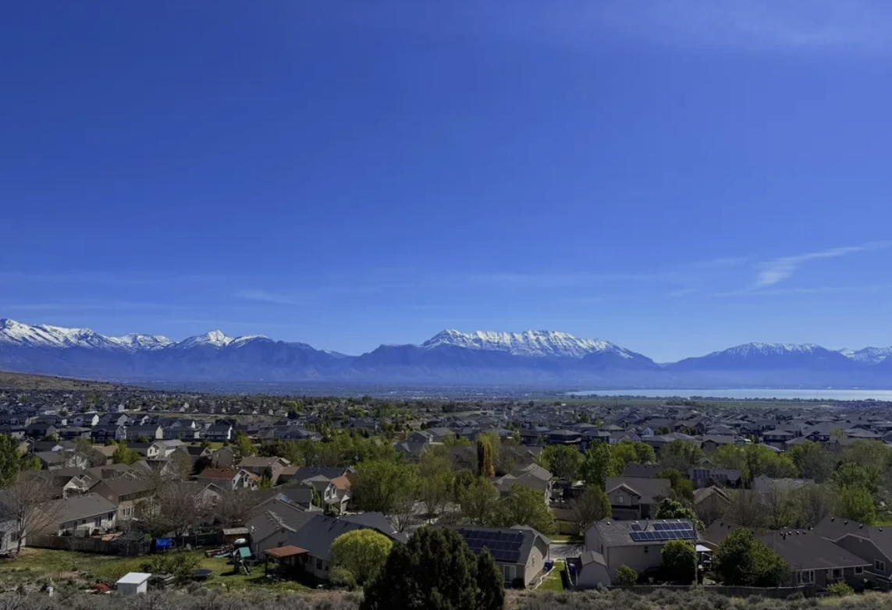
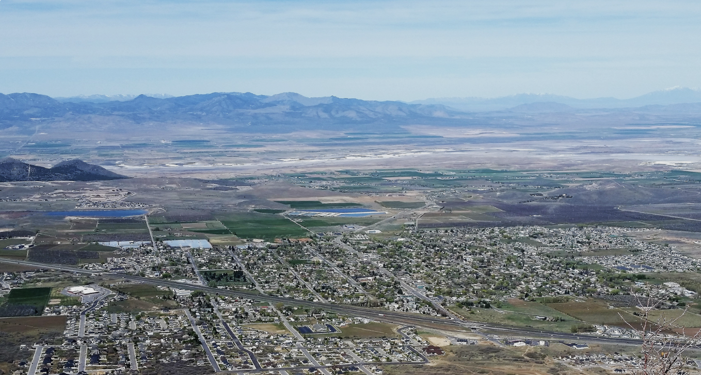
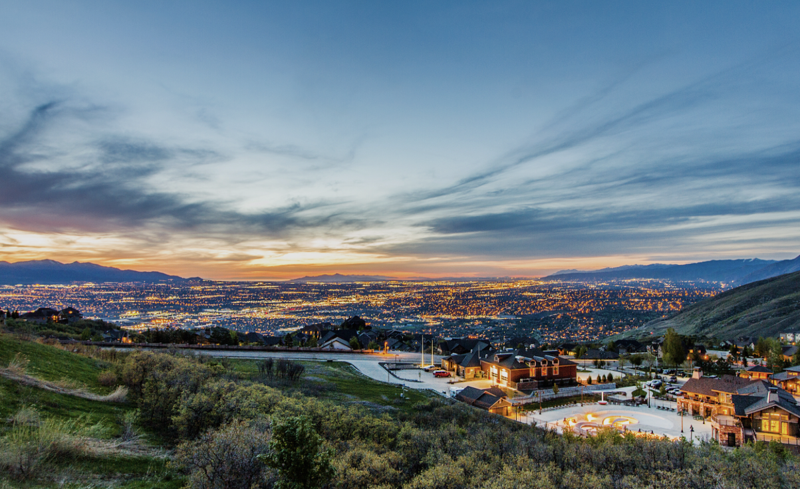

I grew up here, left for 13 years, lived in 4 states, and came back by choice. This is my honest read on each part of the county, and what it feels like to actually live there.

Utah County runs north to south along the Wasatch Range. The mountains sit on the east side of every city along the range. The valley floor runs west toward Utah Lake. That east-west position within any given city changes the feel of your neighborhood more than almost anything else.
LOCAL INSIDER TIP
Pay attention to which direction your driveway faces before you choose a lot. A driveway that faces north or west stays in shade all winter and you will be shoveling every time it snows. A driveway that faces south or east gets direct sun and the snow melts on its own. It sounds like a small detail until your first February in Utah.
The zones below are my own grouping. You will not find them on a county map. I created them based on how buyers actually make decisions, where they work, how they want to spend their weekends, what pace of life they are looking for, and what the inventory looks like in each area. These zones are a starting point for the conversation, not a boundary line.
East of I-15
Mountain views, trail access, canyon proximity
West of I-15
Lake views, flatter terrain, newer development
South of Provo
More land, more affordable, longer commute north
Tap any city for the honest one-liner, then jump straight to its zone below. Prices are sample figures pending verification.
Lehi and Saratoga Springs sit at the northern tip of Utah County where it meets Salt Lake County. This is where most of the Silicon Slopes tech jobs are and the housing reflects that demand. See our commute guide for drive times.


Lehi
Commute
Short to Silicon Slopes, 30-35 min to downtown SLC
Character
Tech corridor energy, newer construction, high demand, close to every major highway interchange
Know Before You Go
The Traverse Mountain east bench area gets real wind. If you are looking at a lot on the bench, factor that in. Elsewhere in Lehi the wind is less of a daily issue.
Saratoga Springs
Commute
35-40 min to SLC, Redwood Road is the primary artery in and out
Character
Lake views, more square footage per dollar than Lehi, growing city with newer inventory
Know Before You Go
Redwood Road congestion is real during peak hours. Being close to Utah Lake means mosquitos are a seasonal reality. Budget for that mentally before you fall in love with the lake view.
The established core of Utah County. More mature neighborhoods, more character in the housing stock, and a range of city personalities that suit very different buyers.

American Fork
Commute
Central location, flexible north-south access on I-15
Character
Solid mid-county option, good freeway access, mix of established and newer neighborhoods
Know Before You Go
Does not have a strong east bench mountain backdrop the way Pleasant Grove or Cedar Hills does but the central location makes commuting in any direction easier.
Pleasant Grove
Commute
Mid-county, easy I-15 access
Character
East bench trail access right from neighborhood streets, growing retail corridor along the freeway, established feel
Know Before You Go
Some of the best hiking access in the county starts at the end of neighborhood streets here. If outdoor access matters to your daily life this is worth a serious look.
Cedar Hills
Commute
No freeway exit of its own. You use American Fork or Pleasant Grove exits.
Character
Quieter pace, close to the mouth of American Fork Canyon, good mix of community feel with nearby amenities
Know Before You Go
No direct freeway exit means a few extra minutes in and out. Not a dealbreaker but worth knowing before you commit.
Highland
Commute
Close to American Fork and Lehi freeway access
Character
Larger lots, slower pace, genuinely small town feel
Know Before You Go
City ordinance requires businesses including stores and restaurants to close on Sundays. Residents voted 60 percent to keep that law in 2012 and it remains in place. If that pace appeals to you, Highland might be your city. If you need a grocery store on Sunday, the next city is about 5 minutes away.
Lindon
Commute
Easy access to I-15 via Orem or American Fork
Character
East bench, quieter than its neighbors, smaller city with less inventory
Know Before You Go
Homes here tend to move when they come up because inventory is limited. If you find something you like in Lindon, move on it.
Vineyard
Commute
I-15 access via Orem exits, FrontRunner station on site
Character
Lakeside, newer development, one of the most actively developing cities in the county right now
Know Before You Go
Utah City, a 700-acre master-planned development, is actively under construction here. The Huntsman Cancer Institute hospital opens in 2028. Utah Valley University is building a campus nearby. This city is earlier in its development curve than its neighbors but the investment going in is significant. Worth watching closely if you have a longer timeline.
Provo and Orem together make up the urban center of Utah County. More city, more options, more diversity in housing type and price point.

Provo
Commute
Multiple I-15 on-ramps, easy north-south access, FrontRunner station
Character
East bench trail access, Provo Canyon right out the east side of the city, growing downtown restaurant and retail scene, BYU influence shapes the demographic
Know Before You Go
The housing stock trends older than north county which means more established neighborhoods but more variation in condition. Inspect carefully. The east side of downtown Provo near Center Street is genuinely worth a look if walkability matters to you.
Orem
Commute
Large city with multiple I-15 on-ramps across its entire length
Character
East bench neighborhoods feel completely different from the west side commercial corridors. Be specific about which part of Orem you are looking at.
Know Before You Go
UVU in Orem creates a younger demographic and more rental inventory in the mix. The west side has strong freeway access. The east bench has trail access and canyon proximity. They are functionally different neighborhoods inside the same city.
Its own category. Eagle Mountain has a character that is genuinely different from the rest of the county and it suits a specific kind of buyer very well.

Eagle Mountain Ranches
Commute
20-25 min to I-15 and American Fork
Character
Hillside terrain with Lake Mountain views, more established neighborhoods, golf course community, mix of housing types
Know Before You Go
Closer to everything than City Center. The Ranches sits on the northern edge of Eagle Mountain near the Lake Mountains which gives you hillside lots and views toward Utah Lake. Wind and dust are part of daily life here but the Ranches is somewhat more sheltered than City Center due to its position on the northern hillside edge of the city.
Eagle Mountain City Center
Commute
30-35 min to I-15. Factor in an extra 10-15 min compared to the Ranches.
Character
Most affordable new construction in Utah County right now, country and rural feel, ATV and off-highway trails surrounding the community, growing fast with new builds going up consistently
Know Before You Go
Tumbleweed storms are not an exaggeration. They happen and they are memorable. City Center sits in the open Cedar Valley which gets more wind and dust than the Ranches. City Center also sits deeper in Cedar Valley which creates colder nights than the Ranches due to being cut off from the moderating influence of the valley. The commute is real. Several buyers who tour here decide it is too far out. Drive it at rush hour before you commit. The flip side: the price point is the best entry-level opportunity in the county and the ATV trail access right out your back door is genuinely unique.
The most land for the money in Utah County and some of the most genuine small-town character left in the valley. The trade-off is commute time north.

Spanish Fork
Commute
About 20 min to Provo, longer to SLC
Character
Strong community feel, Fiesta Days in July, good value
Know Before You Go
Spanish Fork Canyon to the east funnels real wind into the city. It is one of the more notable wind corridors in the county and locals know it. If you are sensitive to wind this is worth experiencing before you buy.
Springville
Commute
About 15-20 min to Provo
Character
Art City, home to Utah's oldest visual arts museum, the Legends Compound shipping container entertainment complex, established neighborhoods
Know Before You Go
One of the most underrated cities in the county. The arts scene and community character here are genuinely strong.
Mapleton
Commute
About 20 min to Provo
Character
East bench, larger lots, views that rival anything in the county, quieter pace
Know Before You Go
Higher price points than most of south county but the lot sizes and views justify it for the right buyer.
Salem
Commute
About 25 min to Provo
Character
Semi-rural, larger lots, mountain views, slower pace
Know Before You Go
If you want that country feeling without being isolated, Salem and Mapleton are the two cities in the county that deliver it most consistently.
Payson
Commute
About 30 min to Provo
Character
Affordable, more square footage per dollar, established small town
Know Before You Go
Payson is home to the Scottish Festival, one of the largest Highland Games events in the western United States, held annually in September. It is the kind of thing that surprises people who move here.
Santaquin
Commute
35-40 min to Provo, longer to SLC
Character
Most affordable entry point in Utah County, more land, quieter
Know Before You Go
The longest commute in the county to Salt Lake City. If you work remotely or your job is in south Utah County this is one of the strongest value propositions in the entire valley.
Its Own Category
These two communities do not fit neatly into any zone. They attract a specific kind of buyer and the experience of living in either one is genuinely unlike anywhere else in Utah County. If you are asking about Alpine or Suncrest, you already know what you are looking for.

Alpine
Commute
10 min to I-15 and Silicon Slopes, 30-35 min to SLC
Character
One of the most prestigious addresses in Utah County. Large lots, custom homes, no grocery store within city limits, minimal traffic because the only people driving in are the people who live there. Homes range from high end to multi-million dollar estates. Brigham Young once said the town reminded him of the Swiss Alps and that reputation has held.
Know Before You Go
Alpine has no commercial retail within the city by design. That is not a bug, it is a feature for the people who choose it. You are 10 minutes to everything in American Fork or Lehi. The views of Utah Lake, Mount Timpanogos, and the valley from the east bench here are some of the best in the county. Lone Peak High School serves Alpine students and it is one of the most competitive high schools in the state.
Suncrest
Commute
10-15 min down the mountain to I-15, add that to wherever you are going from there. The mountain road has a 40 mph speed limit. Factor this in before you fall in love with the views.
Character
A 3,900-acre master-planned community perched on Traverse Ridge on the Utah County side of Draper. The comparison to Park City is not an exaggeration. Mountain top living, 360 degree views of both the Salt Lake and Utah valleys, Mount Timpanogos, and Utah Lake, above the winter inversion, cleaner air, cooler summers. Community amenities include a pool with a lazy river, fitness center, clubhouse, and miles of hiking and biking trails including access to the Corner Canyon trail system.
Know Before You Go
Suncrest straddles the Salt Lake and Utah County line. Which side you are on determines your school district. Alpine District on the Utah County side feeds into Lone Peak High School. The commute down the mountain is real and adds 10-15 min to any valley destination. Police response time is slower because there is no substation on the mountain. Winter road conditions require preparation. For the right buyer none of that matters because nothing else in the county compares to waking up above the clouds.
This is the conversation I have with every relocating client. Where you work, how you like to spend your weekends, what you need within 10 minutes. All of it points somewhere specific. Let's talk through it.
Talk to Kelsie.